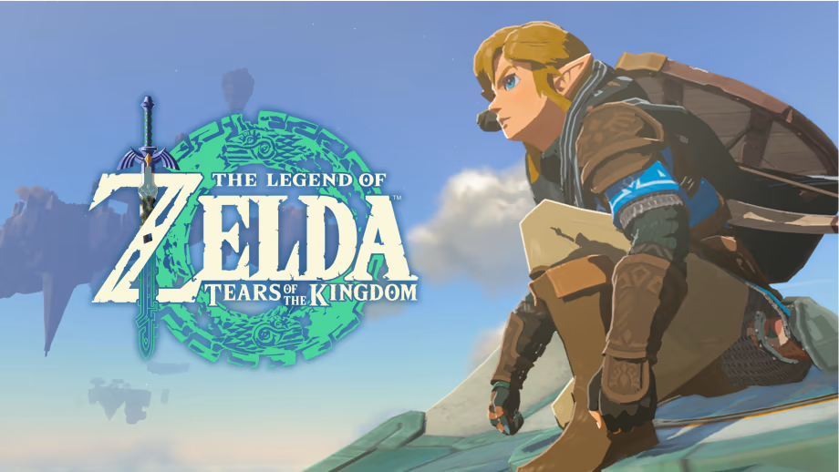

The Legend of Zelda: Tears of the Kingdom

×

The Legend of Zelda: Tears of the Kingdom is a new game for the Nintendo Switch and is the sequel to The Legend of Zelda: Breath of the Wild. The game was released on May 12th, 2023.
About the Game
This game is an open world RPG which allows the player to freely explore its expansive world. The player has the powers to aid them in this adventure, and is challenged to use their creativity to traverse the huge map and solve problems as they encounter them.
Gameplay
The player receives four main powers with a 5th one that isn't immediately introduced in the introduction of the game. These will help players along their journey as they uncover the story in Tears of the Kingdom.
These powers are:
- Ultrahand
- Ascend
- Fuse
- Recall
- Auto-build
Tips
- If you want to experience the game organically, refrain from looking at guides online that may ruin the fun of exploring for yourself.
- Make sure to stock up on food and cook them, as that is how you will heal yourself in the game!
- If you see something suspicious or out of place, chances are there is something cool over there!